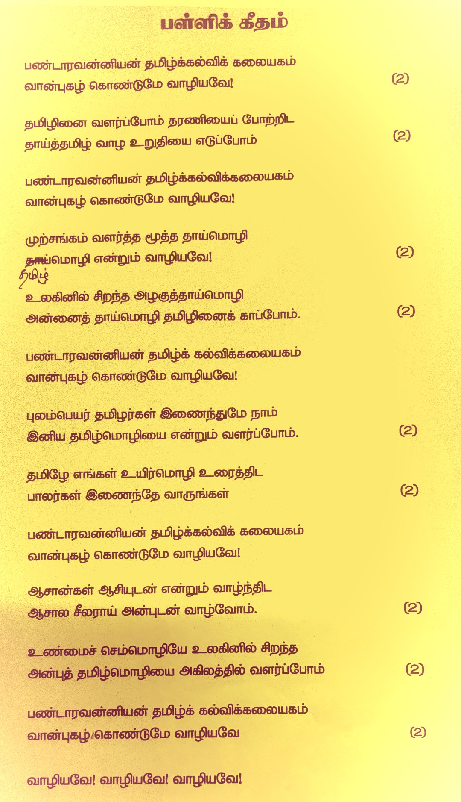

| தேதி | நேரம் / குறிப்பு |
|---|---|
| 10/01/26 | 9:00 - 12:00 |
| 17/01/26 | 9:00 - 12:00 |
| 24/01/26 | அரையாண்டு தேர்வு |
| 31/01/26 | 9:00 - 12:00 |
| 07/02/26 | 9:00 - 12:00 |
| 14/02/26 | பள்ளி விடுமுறை |
| 21/02/26 | 9:00 - 12:00 |
| 28/02/26 | 9:00 - 12:00 |
| 07/03/26 | 9:00 - 12:00 |
| 14/03/26 | 9:00 - 12:00 |
| 21/03/26 | 9:00 - 12:00 |
| 28/03/26 | 9:00 - 12:00 |
🎹 இசை வகுப்புகள்: 12:00 - 1:00
📧 மின்னஞ்சல்:
pandaravaniyan.tamil@gmail.com
📍 முகவரி:
St Andrew's Church Hall, Church Gardens, 956 Harrow Road, Sudbury, Middlesex HA0 2QA
📞 தொலைபேசி (WhatsApp):
07506 254805
|
07910 059192